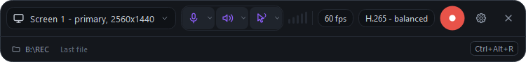
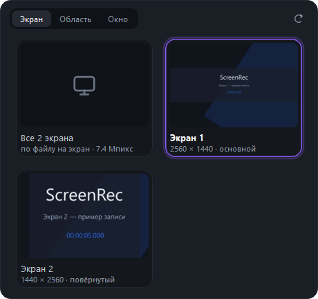
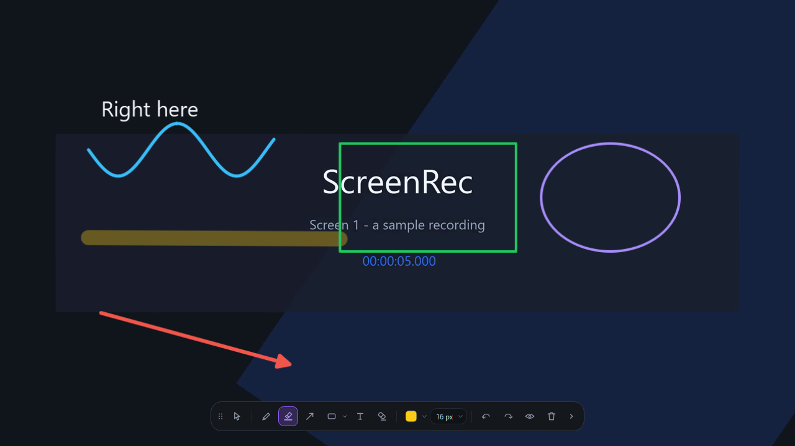
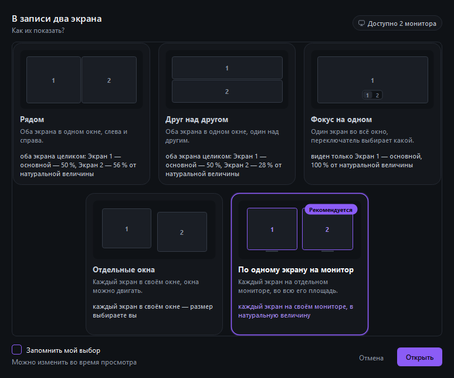
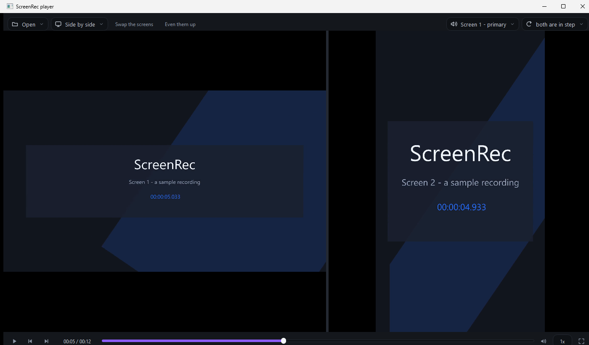
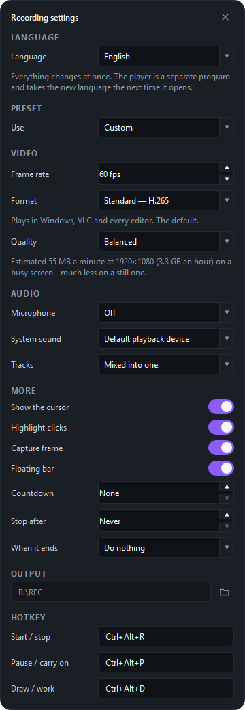
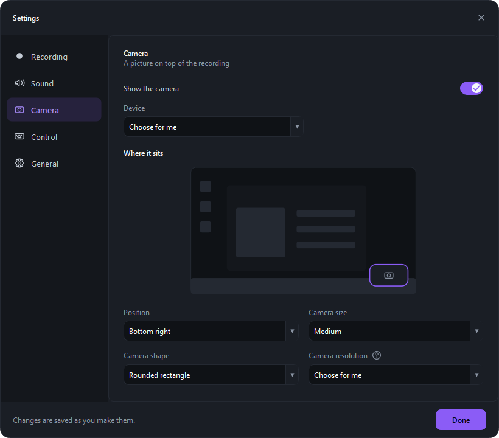

A screen recorder for Windows, and a player for what it records. It captures a monitor, a region you drag out, a single window, or every screen at once, with the microphone and the system sound. No editor, no account, no network.
Windows 10 2004+ · 64-bit Free GPL v3

The bar shrinks to a clock, the size of the file so far, and the frame rate it is really achieving — not the one you asked for.
Any monitor — or all of them at once, one file per screen, started together.
A rectangle you drag out. For when only one corner of the screen matters.
Pick a program from the list and record only that.
Microphone and the computer's own sound, mixed into one track or kept as two.
Drawn or not, with an optional fading ring on every click.
A ring before the start, so there is time to clear the screen.
Four corners, four sizes, and a rounded rectangle, a circle or a plain rectangle. The camera runs at a resolution that suits the little window rather than 1080p - chosen for you, or picked from its own list. It is drawn on the desktop, so the recording picks it up the way it picks up the click rings - and you see it too while you record. If it ends up on top of something that matters, one button on the bar takes it away without touching the recording.
One meter for the microphone and one for the system sound, on the bar and on the recording row. If the sound moves to another device mid-recording, the recording follows it — and if you picked a device by name and it falls silent, the bar says where the sound is going instead.
A playback device that will not open never costs you the recording: the screen and the microphone are recorded anyway and the bar says which track is missing and why. Your device is remembered by name, so it is still the one you chose after the computer’s devices change.
The screen's own size, or scaled down to 1440p, 1080p or 720p. Measured: a 1440p screen at 1080p is a quarter smaller, at 720p 59 % smaller, and the frame rate held.

The thumbnails in this picture are a demonstration clip, not the author's desktop.
Pen, marker, arrow, rectangle, ellipse and text. The drawings reach the file; the toolbar never does.

A recording of two monitors is two files, not one picture with both screens squashed into it. So the player asks how to show them — and works out what fits the monitors you have in front of you now, not the ones you recorded on.

Then it plays them from one clock: one scrubber, one pause, one frame-step, for both streams at once.

Each picture carries its own clock, burned in when it was made. Measured over a playthrough rather than read off one frame: worst drift between the two streams, 17 ms.
If the two streams did not start at the same instant, a panel on the transport slides one against the other by a frame or by 100 ms until they line up.
No bitrates and no profile names. "Normal — H.265", and a line underneath about what it will cost you:
≈ 98 MB a minute at 2560 × 1440 — 5.9 GB an hour on a busy screen, much less on a still one.
Once there are real recordings to go on, that figure stops being an estimate and says measured on this machine. A format your machine cannot encode is disabled, with the reason written next to it.

Five pages, not one long column: Recording, Sound, Camera, Control and General.
The camera page draws where the camera will sit, so you pick a corner by looking at it rather than by reading four words.

Interface in English or Russian, switchable while it runs.
ScreenRec-0.3.2-setup.exe from
Releases and run it.Nothing else is needed. Python, Qt and ffmpeg are all inside the installer; nothing is downloaded and nothing is installed system-wide besides the program itself.
64-bit. The capture uses the Desktop Duplication API, which is where that version requirement comes from.
It tries every encoder on your machine at first run and keeps the one that actually works — NVIDIA, AMD, Intel, Windows' own, or the processor.
It never connects to anything. There is no telemetry, no update check and nothing to sign in to.
The code supports AMD (AMF), Intel (QSV) and Windows' own Media Foundation encoders, written from their documented options and guarded so that an unsupported path falls back to the processor rather than failing. But the author has one NVIDIA card and no way to run the others. If your machine takes the processor path when it should not, that is worth a bug report — the settings will tell you which encoder it chose and why.
So SmartScreen warns about it, and will keep warning until enough people have run it or a certificate is in place. A signature through the SignPath Foundation, which signs open-source projects for free, is planned. Until then the release carries the SHA-256 of the file so you can check it yourself.
Deliberately. It records and it plays. The files are ordinary MP4s, so any editor can open them — but what the editor cannot read is the sidecar that says how far apart two screens started, so a multi-screen take has to be lined up by hand there.
It is drawn on the desktop, which is how it reaches the recording without costing the capture anything and how it can be taken away mid-take. The price is that it is a window: you see it while you record, and so does anyone looking over your shoulder or sharing your screen in a call.
Two monitors are tested thoroughly, including one unplugged mid-playback. Three screens work in the code and in the tests but have never been run on real hardware. Display scaling: the settings window was checked at 125 %, 150 % and 200 %, where it scrolls rather than clipping — the rest of the interface has only ever run at 100 %, because both of the author's screens are.
The audio library builds its list of devices once, when it starts. So a headset connected after ScreenRec was launched cannot be recorded until ScreenRec is launched again. It no longer costs you a recording — the default device is recorded instead and the program says so — but it is a real limit and it is the library’s, not a setting you can change.
The capture is the Windows Desktop Duplication API and the system-sound path is WASAPI loopback. Neither exists elsewhere, and nothing here was written with a port in mind.
ScreenRec is free: no ads, no subscription, no paid edition, and nothing held back for one. It was written in evenings because the program it replaces would not install. If it saved you a recording — or an argument about what was on screen — you can say thank you.
Support on BoostyThank you for using it.